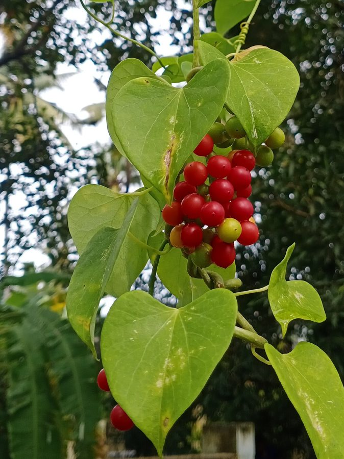

गिलोयGiloy
Tinospora cordifolia · Menispermaceae · FLR-0012

- Scientific name
- Tinospora cordifolia (Willd.) Miers
- Family
- Menispermaceae
- Hindi
- गिलोय / गुडूची / अमृता
- Status here
- native
- IUCN
- not evaluated
When to look कब देखें
Present all year.
गिलोय / Giloy
Tinospora cordifolia (Willd.) Miers — Menispermaceae
गिलोय — पूर्वी उत्तर प्रदेश का सबसे लोकप्रिय औषधीय पौधा, जो नीम और आम के पेड़ों के सहारे लिपटकर हमेशा हमारी नज़रों के सामने रहता है। आयुर्वेद में 'अमृता' (अमरता की बूटी) के नाम से प्रसिद्ध यह काष्ठीय बेल हाल के वर्षों में वैश्विक महामारी के दौरान रोग-प्रतिरोधक क्षमता बढ़ाने के लिए जन-जन की पहचान बनी। नीम पर चढ़ी हुई गिलोय विशेष रूप से औषधीय रूप से श्रेष्ठ मानी जाती है क्योंकि यह अपने सहारे के रूप में खड़े पेड़ के कुछ प्राकृतिक औषधीय तत्वों को भी आत्मसात कर लेती है।
Quick Identification त्वरित पहचान
| Feature | Description |
|---|---|
| Habit & Stem | Perennial woody climbing vine (liana); stems are green and fleshy when young, turning grey-green with a papery skin when older |
| Aerial Roots | Thread-like, fleshy green aerial roots (2–15 cm long) that hang down from nodes along the climbing stems |
| Leaves | Alternately arranged, broad, heart-shaped (cordate), 10–15 cm long, smooth, looking similar to betel leaves |
| Flowers | Small, inconspicuous pale yellow-green flowers (appearing May–July) borne in slender axillary racemes |
| Fruit | Small, round to ovoid fleshy drupes (6–8 mm), green when raw and ripening to a glossy bright red |
Field tip: Look for a woody vine climbing up Neem or Mango trunks, characterized by heart-shaped leaves and thin, green thread-like roots hanging from the stems. When cut, the stem cross-section shows a characteristic wheel-like spoke design.
Morphology आकारिकी
Biometrics (typical measurements in the Gangetic plain):
| Feature | Measurement |
|---|---|
| Vine length | 5–15 m |
| Stem diameter | 1–3 cm |
| Leaf length | 10–15 cm |
| Leaf width | 8–13 cm |
| Fruit diameter | 6–8 mm |
Habit: Perennial, woody, climbing vine (liana). Stems initially herbaceous, becoming woody with age; can extend 5–15 m up a host tree. Often forms tangled masses in the canopy.
Stem: 1–3 cm diameter in mature plants. Bark grey-green, fleshy, with thin longitudinal ridges. Characteristic feature: fleshy aerial roots (adventitious rootlets) emerging from internodes, hanging as 2–15 cm thread-like growths. These help the vine cling to rough bark.
Leaves: Simple, alternate, broadly cordate (heart-shaped), 10–15 cm long, 8–13 cm wide. Tip pointed. Margin entire (no teeth). Petiole long (6–10 cm). Veins palmate (5–7 radiating from the base). Deciduous — shed in November–December, regenerating in March.
Flowers: Small, 6-petalled, pale yellow-green. Male flowers in clusters; female flowers solitary or in small racemes. May–July. Not showy; easy to overlook.
Fruit: Drupes, 6–8 mm, ovoid, red when ripe, in small clusters. August–November.
हिंदी: पत्ती दिल के आकार की, पाँच से सात नसें जड़ से निकलती हैं।
तने से लटकती पतली जड़ें — गिलोय की पक्की पहचान।
छोटे लाल फल अगस्त–नवम्बर में।
The Neem–Giloy Partnership नीम–गिलोय की जोड़ी
In eastern UP, giloy is most often found growing on neem trees — and this combination has a specific Ayurvedic significance.
Ecologically: Giloy uses neem as a trellis. It does not parasitize the neem — it is an independent plant that simply climbs. It roots in the soil beneath the neem tree.
Ayurvedic belief: The neem-giloy (giloy that has climbed a neem tree) is considered superior to giloy growing on other trees because the vine is believed to absorb some of neem's chemical properties through contact with the bark, via the aerial rootlets. This is partially supported by chemical studies showing higher azadirachtin-related compound concentrations in neem-associated giloy, though the mechanism is debated.
Village practice: Many households in Basti district specifically look for neem-giloy when harvesting stems for medicinal use. The distinction between neem-giloy and "ordinary" giloy is widely recognized at the village level.
हिंदी: नीम पर चढ़ी गिलोय को सबसे अच्छा माना जाता है।
आयुर्वेद में नीम के गुण गिलोय में आने की बात कही जाती है।
बस्ती जिले में लोग नीम वाली गिलोय की तलाश करते हैं।
Ecological Role पारिस्थितिक भूमिका
As a climber: Giloy uses trees as physical support without physically harming them (unlike the strangler fig). It is a liana — an independent plant using existing structure to reach light.
Pollinator resource: Small bees, hoverflies, and small wasps visit giloy flowers. The flowers are not spectacular but provide a reliable June–July nectar source when many other species are between flowering events.
Fruit and birds: Small red fruits are eaten by small birds — particularly bulbuls, mynas, and sunbirds — which disperse seeds into tree canopies where the vine germinates and begins climbing again.
As a companion plant: The shade-and-structure provided by giloy over neem creates a microhabitat — small spiders, caterpillars, and beetles inhabit the hanging aerial rootlets.
हिंदी: गिलोय परजीवी नहीं है — यह पेड़ को नुकसान नहीं पहुँचाती।
इसके फूल कीटों को पराग और मकरंद देते हैं।
लाल फल पक्षी खाते हैं और बीज फैलाते हैं।
Life Cycle / Phenology जीवन चक्र
- Propagation: Stem cuttings root easily — the primary means of village cultivation; seeds also viable
- Growth: Fast-growing; can reach 3 m in one growing season from a cutting
- Lifespan: Perennial — the root system survives for many years; the above-ground vine is partially woody
- Deciduous phase: November–February; leaves drop, stems remain green and alive
- Leaf flush: March–April
- Flowering: May–July
- Fruiting: August–November
हिंदी: डंठल लगाने से आसानी से उगती है।
एक साल में 3 मीटर तक बढ़ सकती है।
नवम्बर–फरवरी में पत्ती झड़ जाती है; बेल जीवित रहती है।
Medicinal Significance औषधीय महत्व
Traditional Ayurvedic uses:
- Immunity tonic — the primary claim
- Fever (especially chronic or recurrent fevers)
- Dengue and chikungunya management (reduces platelet drop — the most common folk use in eastern UP)
- Diabetes (hypoglycaemic effect — some clinical evidence)
- Arthritis and inflammation
- Jaundice and liver conditions
- Prepared as a decoction (काढ़ा): stems boiled in water, drunk daily
Active compounds: Alkaloids (berberine, palmatine), diterpenoid lactones (tinosporides), glycosides, and polysaccharides — immunomodulatory effects documented in several studies.
Scientific status: Several compounds have demonstrated activity in laboratory and small-scale human studies. The immunity-boosting and anti-fever claims have partial scientific backing. The COVID-related claims (2020–21) were not clinically validated. Self-medication can mask serious illness — medical consultation essential.
Important concern: The 2020–21 surge in giloy consumption in India led to documented cases of drug-induced liver injury (DILI) — likely due to adulteration with Tinospora crispa (a toxic relative) or excessive dosage. This is a real risk.
हिंदी: गिलोय का काढ़ा बुखार, डेंगू, और रोग-प्रतिरोधक क्षमता के लिए इस्तेमाल होता है।
कुछ वैज्ञानिक प्रमाण मौजूद हैं, लेकिन कोविड संबंधी दावे सिद्ध नहीं हुए।
सावधानी: अधिक मात्रा में लेने पर लिवर पर असर पड़ सकता है। डॉक्टर की सलाह ज़रूरी है।
Expected Locally स्थानीय रूप से अपेक्षित
Not a field record. Written from published accounts for eastern Uttar Pradesh. No confirmed local sighting yet — if you have seen it, that is what the atlas needs.
अभी तक स्थानीय पुष्टि नहीं। यह विवरण प्रकाशित स्रोतों से है, किसी अवलोकन से नहीं।
Commonly found in rural areas of Basti district climbing up domestic trees, with Neem and Mango being the most frequent hosts. Stems are regularly cut by villagers during the late monsoon and winter months to prepare traditional immunity tonics (kadha). The deciduous phase in winter leaves the bare grey-green tangled vines clearly visible on host tree trunks.
Distribution वितरण
Global range: Native to tropical regions of the Indian subcontinent (India, Pakistan, Bangladesh, Nepal, Sri Lanka) and parts of Indochina and China.
In India: Widespread across almost all states, especially in tropical deciduous forests, dry deciduous habitats, and agricultural plains.
In Uttar Pradesh: Extremely common across the state, climbing wild on scrublands and widely cultivated in gardens and household yards.
In Basti district / eastern UP: Highly common in all villages and towns, found climbing on trees in courtyards, hedges, and forest margins.
Range notes: Shows strong drought resistance.
Research Questions शोध प्रश्न
Anyone can investigate these | कोई भी इन प्रश्नों की जाँच कर सकता है
- Which tree species does giloy prefer in your area? / आपके क्षेत्र में गिलोय किस पेड़ पर सबसे ज़्यादा चढ़ती है? — Survey 20 giloy plants; record host tree species each time. Does it prefer neem, mango, or others?
- What is the maximum stem height giloy reaches on a neem tree? / नीम पर गिलोय कितनी ऊँचाई तक जाती है? — Measure the highest point of the vine; does it reach the canopy?
- Does neem-giloy taste or smell different from giloy on other trees? / नीम वाली गिलोय अन्य पेड़ों वाली से अलग लगती है? — Crush stem; compare bitterness. A simple sensory test that anyone can do.
- Are aerial rootlets (hanging roots) present on all giloy stems? / क्या हर गिलोय की बेल पर लटकती जड़ें होती हैं? — Check multiple plants in different habitats. Do stems on rough bark have more rootlets than those on smooth bark?
- When exactly does giloy lose and regain its leaves in your village? / आपके गाँव में गिलोय कब पत्ती खोती और कब वापस पाती है? — Record both dates annually from the same plant. A simple phenology dataset.
Similar Species मिलती-जुलती प्रजातियाँ
| Species | How to tell apart | Hindi |
|---|---|---|
| Betel (Piper betle) | Leaves glossy, waxy; no aerial rootlets; grown on low frames, not trees | पान — चिकनी पत्ती |
| Wild spinach climber (Basella alba) | Succulent, bright green; leaves smaller; red-black fruit; grown as vegetable | पोई / मालाबार पालक |
| Tinospora crispa | Nearly identical; stem more warty/tuberculate; found more in South India; toxic | एक और गिलोय — तने पर मस्से |
Field rule: Heart-shaped deciduous leaves on a climbing woody vine with hanging aerial rootlets, on neem or mango trees in a village setting = giloy. No other common eastern UP climber has all four features together.
Taxonomy & Classification वर्गीकरण
Original description. Tinospora cordifolia was first described by Carl Ludwig Willdenow as Menispermum cordifolium in 1806, and was later transferred to the genus Tinospora by John Miers in 1851 in Annals and Magazine of Natural History, series 2, vol. 7, p. 38. Type locality: India. The genus name Tinospora refers to its warty skin, while cordifolia refers to its heart-shaped leaves.
Subspecies. Monotypic — no subspecies are currently recognised.
Family and order placement. Placed in the order Ranunculales, family Menispermaceae (moonseed family). Menispermaceae consists mainly of dioecious climbing vines with characteristic crescent-shaped seeds.
Phylogenetic notes. Widespread in Asian tropical lowlands, Tinospora cordifolia has been subject to phylogenetic studies confirming its placement within the tribe Tinosporeae. No major taxonomic controversies are active.
IUCN status rationale. This species has not been evaluated by the IUCN Red List (Not Evaluated). It is secure due to widespread distribution and cultivation, although commercial over-harvesting from wild habitats poses localized threats.
Photo Gallery फोटो गैलरी
References संदर्भ
- Willdenow, C.L. (1806). Species Plantarum. Vol. 4. G.C. Nauck, Berolini.
- Sharma, U. et al. (2012). Immunomodulatory active compounds from Tinospora cordifolia. Journal of Ethnopharmacology, 141(3): 918–926.
- Singhal, M. et al. (2010). Medicinal plants with immunomodulatory activity. Journal of Pharmacy Research, 3(2): 1–3.
- Singh, S.S. et al. (2003). Chemistry and medicinal properties of Tinospora cordifolia. Fitoterapia, 74(1–2): 1–33.
- Botanical Survey of India — Flora of Uttar Pradesh.
- GBIF Occurrence Data — Tinospora cordifolia records (2010–2024).
Source file: species/flora/climbers/giloy.md